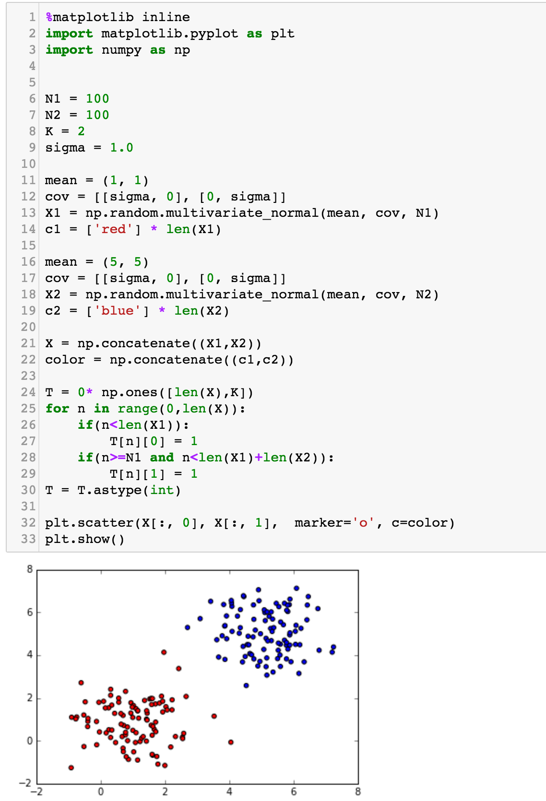
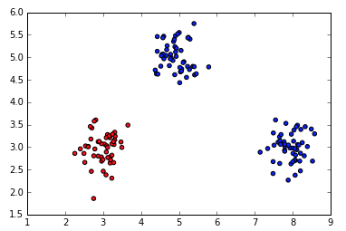
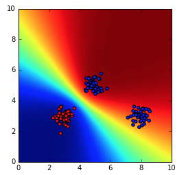

EE5907/EE5027: CA1
Deadline: September 30, 2022 at 5pm
Read carefully: Academic integrity must be stricly followed. Copying from other's code/text or from anyone or any source is not allowed. Exchanging codes is not allowed. Software will be used to detect any form of source code plagiarism. Your submitted code must be grouped/separated into the same parts in the instructions. In your submission, you must provide us with all necessary libraries. You are not allowed to use any toolboxes (if you are not sure, you should ask). If you use separate files in your submission, you must zip them to one file. The submission must not be in separate files in different times (it must be submitted together). The deadline is a strict deadline, so please prepare and plan early and carefully. Late submission will be deducted 10 points (out of 100) for every 24 hours.
Programming language: Python version 3.
Submission: Jupyter Notebook (any other format won't be accepted). In your Jupyter notebook file, you must compile the codes and show the results there in the file.
Part 1: MAP
Write a program in python to implement the MAP (or regularization) for polynomial curve fitting problem. Follow the instructions below:
- Generate 50 2D-data points using the following
function:

- Add Gaussian random noise to the data
- Show the original curve line and the noisy data.
 .
.
The red line is the original curve based on the equation. The green dots are the noisy data. - Fit the generated noisy data using the MAP as discussed in class.
- Compute and display the total absolute error value (between the predicted and the correct ones) of using the computed w.
- Display the estimated values of w
- Experiment with your code by changing M and alpha (the
coefficient of the regularization/prior term) to various
values, and then show the plots. On each the plot, you must
show the values of M and alpha.


Left: An example of the overfitting problem when M = 10. Right: An example of how the regularization term reduces the overfitting problem (M =10, alpha = 0.4). - From the experiment in #7, discuss how M and alpha influence on the fitting accuracy.
Part 2: BASIS FUNCTION
Write a program in python to implement the MLE that employs basis functions to solve the polynomial curve fitting problem. Follow the instructions below:
- Generate 50 2D-data points using the following
function:
- Add Gaussian random noise to the data
- Fit the generated noisy data using the MLE that employs the Gaussian basis functions as discussed in class.
- Show your results for different values of M that
generate overfitting and underfitting curves.


- Change the basis functions to the sigmoid basis functions, and show the results for different values of M that generate overfitting and underfitting curves.
- Change the original curve function
to
 ,
and use the sigmoid basis function to estimate the best
curve fitting from the noisy data.
,
and use the sigmoid basis function to estimate the best
curve fitting from the noisy data.

- Experiment with different parameters of the Gaussian and sigmoid basis functions, and then show the plot. Also, discuss the advantages of these basis functions over polynomial functions.
Part 3: FULL BAYESIAN + PREDICTIVE DISTRIBUTION
Write a program in python to implement the full Bayesian inference on Gaussian variables for curve fitting problem. Follow the instructions below:
- Generate 50 2D-data points using the following
function:
.
Add Gaussian random noise to the data.
Show the original curve line and the noisy data.
.
The red line is the original curve based on the equation. The green dots are the noisy data. - Compute w based on the full Bayesian inference (by using basis functions like discussed in class). Display the estimated values of w.
- Experiment with your code by changing alpha and beta. Discuss the meaning of them with respect to the curve fitting results.
- Show your best fitting, similar to:

- Explain how useful p(w|t) for the training and testing stages.
- Generate 50 2D-data points using the following
function:
.
Add Gaussian random noise to the data.
Show the original curve line and the noisy data.
.
The red line is the original curve based on the equation. The green dots are the noisy data. - Compute the predictive distribution of every input
data sequentially, where each input data is taken randomly
from the noise data. Show your best prediction results
for all 50 data one by one:


...
...
...


- Explain why the predictive distribution is better than the original form of the full Bayesian inference.
- Discuss the differences between p(t_new|t) and p(w|t).
Part 4: CLASSIFICATION USING FULL BAYESIAN + PREDICTIVE DISTRIBUTION
- This is an example code to generate classification data of two classes
 - Based on the code above, generate data similar to:
 - Implement the predictive distribution, where the output
is a decision whether a given point belongs to C1 or C2.
Based in the generated data and your implementation, compute the probability map:
 - Ask the user to enter any new value of x, and your task is to provide the decision whether it belongs to C1 or C2, and its uncertainty information.